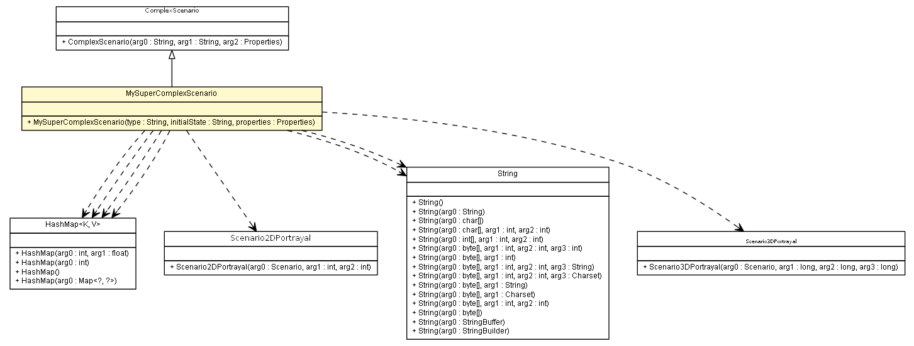

es.upm.dit.gsi.shanks.model.scenario.test
Class MySuperComplexScenario

java.lang.Object
 es.upm.dit.gsi.shanks.model.scenario.Scenario
es.upm.dit.gsi.shanks.model.scenario.ComplexScenario
es.upm.dit.gsi.shanks.model.scenario.test.MySuperComplexScenario
es.upm.dit.gsi.shanks.model.scenario.Scenario
es.upm.dit.gsi.shanks.model.scenario.ComplexScenario
es.upm.dit.gsi.shanks.model.scenario.test.MySuperComplexScenario
public class MySuperComplexScenario
- extends ComplexScenario
- Author:
- a.carrera
| Methods inherited from class es.upm.dit.gsi.shanks.model.scenario.Scenario |
addFailure, addNetworkElement, addPossibleEventsOfNE, addPossibleEventsOfNE, addPossibleEventsOfNE, addPossibleEventsOfScenario, addPossibleEventsOfScenario, addPossibleEventsOfScenario, addPossibleFailure, addPossibleFailure, addPossibleFailure, addPossibleStatus, addProperty, createScenarioPortrayal, generateFailures, generateNetworkElementEvents, generateScenarioEvents, getCurrentElements, getCurrentStatus, getFullCurrentFailures, getID, getNetworkElement, getPossibleEventsOfNE, getPossibleEventsOfScenario, getPossibleFailures, getProperties, getProperty, removeFailure, removeNetworkElement, removePorperty, removePossibleFailure, removePossibleStatus, setCurrentStatus, setProperties, setupNetworkElementEvent, setupScenarioEvent |
| Methods inherited from class java.lang.Object |
clone, equals, finalize, getClass, hashCode, notify, notifyAll, toString, wait, wait, wait |
STORM
public static final String STORM
- See Also:
- Constant Field Values
EARTHQUAKE
public static final String EARTHQUAKE
- See Also:
- Constant Field Values
SUNNY
public static final String SUNNY
- See Also:
- Constant Field Values
MySuperComplexScenario
public MySuperComplexScenario(String type,
String initialState,
Properties properties)
throws ShanksException
- Parameters:
type - initialState - properties -
- Throws:
UnsupportedNetworkElementFieldException
TooManyConnectionException
UnsupportedScenarioStatusException
DuplicatedIDException
NonGatewayDeviceException
AlreadyConnectedScenarioException
SecurityException
IllegalArgumentException
NoSuchMethodException
InstantiationException
IllegalAccessException
InvocationTargetException
ShanksException
addScenarios
public void addScenarios()
throws ShanksException
- Specified by:
addScenarios in class ComplexScenario
- Throws:
ShanksException
setPossibleStates
public void setPossibleStates()
- Specified by:
setPossibleStates in class Scenario
addNetworkElements
public void addNetworkElements()
throws ShanksException
- Specified by:
addNetworkElements in class Scenario
- Throws:
ShanksException
addPossibleFailures
public void addPossibleFailures()
- Specified by:
addPossibleFailures in class Scenario
getPenaltiesInStatus
public HashMap<Class<? extends Failure>,Double> getPenaltiesInStatus(String status)
throws ShanksException
- Specified by:
getPenaltiesInStatus in class Scenario
- Throws:
ShanksException
main
public static void main(String[] args)
throws ShanksException
- Parameters:
args -
- Throws:
SecurityException
IllegalArgumentException
NoSuchMethodException
InstantiationException
IllegalAccessException
InvocationTargetException
UnsupportedNetworkElementFieldException
TooManyConnectionException
UnsupportedScenarioStatusException
DuplicatedIDException
DuplicatedPortrayalIDException
ScenarioNotFoundException
DuplicatedActionIDException
DuplicatedAgentIDException
ShanksException
createScenario2DPortrayal
public Scenario2DPortrayal createScenario2DPortrayal()
throws ShanksException
- Specified by:
createScenario2DPortrayal in class Scenario
- Throws:
ShanksException
createScenario3DPortrayal
public Scenario3DPortrayal createScenario3DPortrayal()
throws ShanksException
- Specified by:
createScenario3DPortrayal in class Scenario
- Throws:
ShanksException
addPossibleEvents
public void addPossibleEvents()
- Specified by:
addPossibleEvents in class Scenario
Copyright © 2011-2013 Grupo de Sistemas Inteligentes - Universidad Politécnica de Madrid. All Rights Reserved.